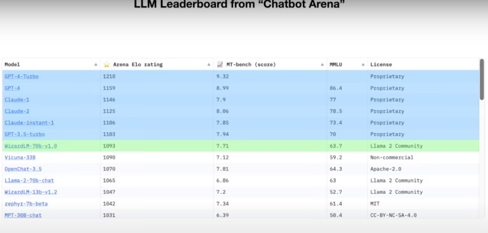
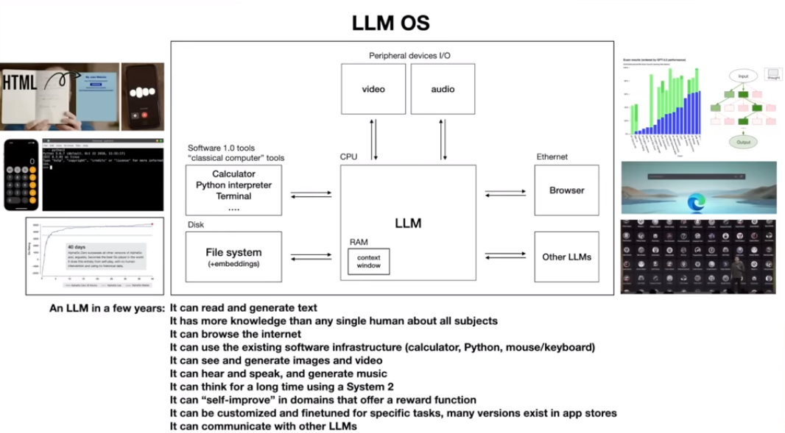

AI Edu
模型的比较
1.大语言模型LLM的比较  2.未来的LLM操作系统 
AI Books
1.How to become a freelance data scientist
2.CSDN深入浅出pytorch函数
3.stable-baselines3手册
4.sb3-contrib手册
AI Classes
1.Andrej Karpathy
Llama 2最简化版本
介绍LLM原理、第一第二系统、hailjack、attack等
2.QQ浏览器2021AI算法大赛赛道一 第1名 方案
3.AlphaGoZero 原理讲解
AI Library
- 一个轻量级的MoE训练框架（MoE: Mixture of Experts 稀疏门控制的专家混合层）。
- 知乎
- mgeblocks-public
2.MLX
- 基于苹果芯片的机器学习框架
- MLX上可以使用的模型
- 比如Whisper、LoRA等
- 苹果上的Mistral 7b
3.AIdea
- 支持 GPT 以及国产大语言模型通义千问、文心一言等
- 支持 Stable Diffusion 文生图、图生图、 SDXL1.0、超分辨率、图片上色
- 开源App
4.Alpaca
*开源的本地运行LLM小模型
AI Tools Manual
1.word安装chatGPT插件
2.chatGPT提示语prompt
提示语技巧
23个提示语
用AI做ppt
prompt教程 ChatGPT和Midjourney教程
prompt教程
3.用google生成图片
4.使用google的NotebookLM
5.使用google的gemini
使用范例
6.ResearchGPT使用方法
7.从视频生成博文
8.使用Microsoft Designer设计3D头像
9.从草图到视频
10.使用Bard
11.用Midjourney生成视频
12.用Copilot模仿你的写作风格
13.用AI练雅思口语
AI服务器
- 托管AI服务
- Steamship Python SDK 开源客户端
- 有免费GPT4
在线课程
1.AltSchool 非洲在线课堂
2.Speechling 语言学习网站
3.雅思云 雅思备考网站